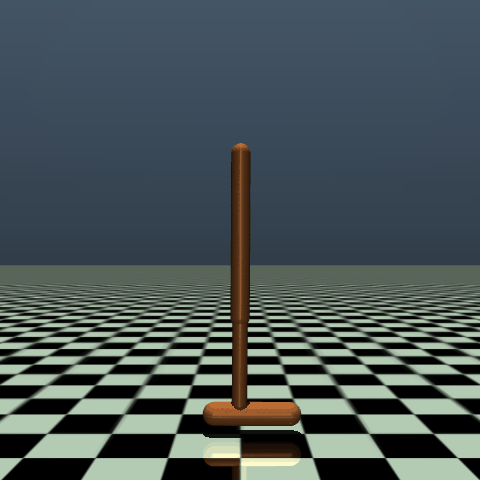
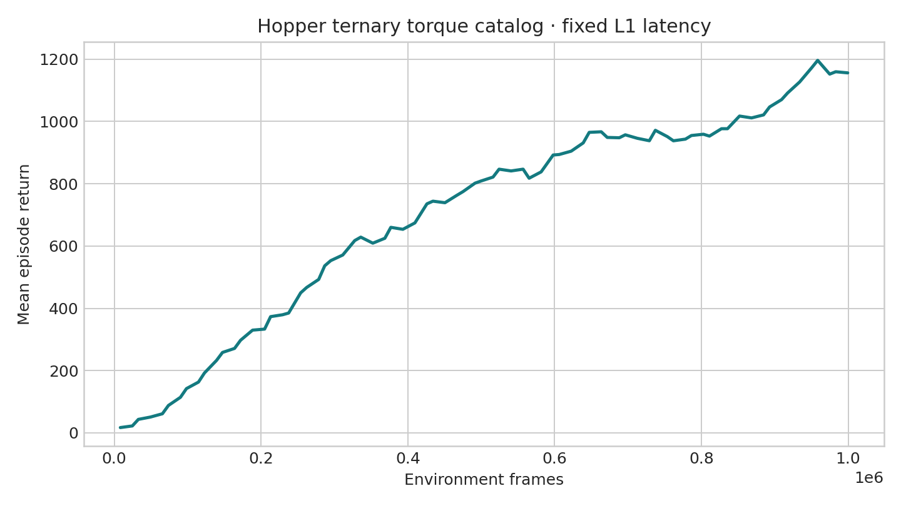
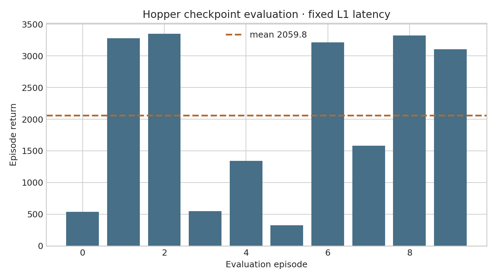
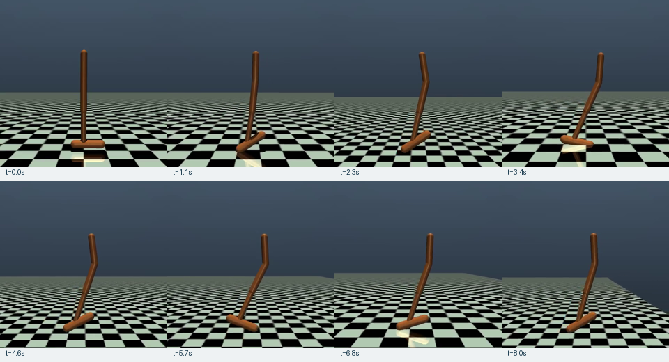

Task wrapper
Catalog IDs map to exact three-joint float32 torques before native Hopper steps.
latency-sensitive-bench / verified release example
A transparent record of how the agent converted three continuous joint torques into a finite categorical catalog, preserved Hopper-v4 dynamics, trained fixed-L1 APPO, and evaluated the final checkpoint through latency-bench.
01 · Outcome
Catalog IDs map to exact three-joint float32 torques before native Hopper steps.
Fixed-L1 APPO completed 1,015,808 frames and produced best and latest checkpoints.
Ten full closed-loop episodes produced metrics, action/step traces, latency records, and video.
No rollout dataset, conversion, SFT, or StarVLA evaluation was requested.
02 · Runtime and design
Hopper-v4, not current v5.Box(-1,1,(3,),float32) for thigh, leg, and foot torques.(11,) float64.(480,480,3) uint8.{−1,0,+1}.t_*, l_*, f_*; n/z/p mean negative/zero/positive.t_z_l_z_f_z is catalog ID 13 and the delayed no-op.L1=8 ms; native reward, reset, termination, observation, and rendering retained.The runtime probe records the pinned API. The 27-vector catalog is explicitly marked user-approved because Gymnasium does not define this discretization.
03 · Generated implementation
latency_bench/envs/gymnasium_hopper.pyRegisters LatencyBench/HopperDiscrete-v0 and maps ID → three-element native torque.
scripts/scaffold_gymnasium_hopper.pyProbes the pinned MuJoCo API and emits the accepted 27-action contract.
configs/examples/gymnasium/hopper/Contains grouped small-model train/eval, benchmark eval, and unexecuted StarVLA eval configs.
tests/envs/test_gymnasium_hopper.pyChecks vector mapping, dtype, zero torque ID, timing, probe output, and config equality.
04 · Immutable task contract
observation_stride = 125 / 125 = 1 · latency_raw_frames = ceil(8 × 125 / 1000) = 1
env:
name: gymnasium
task_name: hopper_discrete_ternary
env_id: LatencyBench/HopperDiscrete-v0
registration_imports: [latency_bench.envs.gymnasium_hopper]
make_kwargs:
base_env_id: Hopper-v4
render_mode: rgb_array
action_values: Cartesian product of [-1.0, 0.0, 1.0] across 3 joints
base_make_kwargs:
forward_reward_weight: 1.0
ctrl_cost_weight: 0.001
healthy_reward: 1.0
terminate_when_unhealthy: true
reset_noise_scale: 0.005
exclude_current_positions_from_observation: true
env_fps: 125
obs_fps: 125
frame_stack: 1
noop_action: t_z_l_z_f_z
action_order: lexicographic t_[n|z|p]_l_[n|z|p]_f_[n|z|p]The full explicit 27-vector YAML is preserved in env_block.yaml. All four configs resolve to the same environment mapping.
05 · Contract propagation
The generic branch imports and constructs the registered Hopper wrapper.
Sample Factory emits IDs 0–26; task ID 13 means zero torque.
The task wrapper converts the ID into the exact thigh/leg/foot vector.
The same ordered IDs are delayed one raw tick and decoded without reordering.
| Field | Training | Evaluation |
|---|---|---|
| Registered ID + kwargs | Reconstruct Hopper-v4 wrapper | Build identical dynamics and catalog |
| 27 labels and IDs | Define categorical output width | Decode checkpoint result |
| Torque vectors | Map catalog ID to native Box action | Preserve exact action semantics |
| No-op ID 13 | Initialize latency queue | Apply zero torque before first result |
| 125 Hz clock | One observation per raw tick | Convert 8 ms to L1 |
06 · Verification gates
Hopper and all current generic examples passed together on the server.
Seed 123 and eight catalog vectors matched direct Hopper observations, rewards, and endings exactly.
Issued ID 26 first applied zero torque ID 13, then became active next tick.
Observation remained 11-D float64; native action remained three-D float32; RGB remained 480×480.
07 · Command ledger
vast-4090-latency: Conda latency, Python 3.10.20, Torch 2.11.0+cu128, RTX 4090, Gymnasium 0.29.1, MuJoCo 3.3.7, Sample Factory 2.1.1; headless rendering used EGL.
conda activate latency
uv pip install "gymnasium[mujoco]==0.29.1" "mujoco==3.3.7"
python -m pip check
MUJOCO_GL=egl pytest -q \
tests/envs/test_gymnasium_hopper.py \
tests/envs/test_gymnasium_lunar_lander.py \
tests/envs/test_gymnasium_pendulum.py \
tests/envs/test_gymnasium_env_adapter.py \
tests/training/test_gymnasium_sf.py \
tests/policies/test_generic_gymnasium_starvla_policy.pyMUJOCO_GL=egl python scripts/scaffold_gymnasium_hopper.py \
--report-path /workspace/hopper-adapt/api_probe.json \
--env-yaml-path /workspace/hopper-adapt/env_block.yaml
MUJOCO_GL=egl python artifacts/hopper/repro_scripts/zero_latency_parity.py
MUJOCO_GL=egl python artifacts/hopper/repro_scripts/l1_scheduler_trace.pyMUJOCO_GL=egl WANDB_MODE=disabled python -m training.train \
--config configs/examples/gymnasium/hopper/small_model_train.yamlCompleted 1,015,808 frames at 2,546.6 FPS. Latest checkpoint: outputs/examples/gymnasium_hopper/checkpoints/gymnasium_hopper_discrete_ternary_fixed_l1/checkpoint_p0/checkpoint_000001984_1015808.pth.
MUJOCO_GL=egl python -m latency_bench.run \
--config configs/examples/gymnasium/hopper/small_model_eval.yaml \
--checkpoint-path outputs/examples/gymnasium_hopper/checkpoints/\
gymnasium_hopper_discrete_ternary_fixed_l1/checkpoint_p0/\
checkpoint_000001984_1015808.pth \
--episode-start 0 --episode-count 10Mean return 2,059.782, standard deviation 1,244.812, mean length 642.8, scheduled latency 8 ms.
08 · Evidence ledger




Full checkpoints and raw records remain in ignored outputs/examples/gymnasium_hopper/; curated evidence only is duplicated here.
09 · Optional continuation
active_action_dim=27; it would not output the original continuous three-vector.10 · Isolation and limitations
pyproject.toml.See the normative guide and examples index.